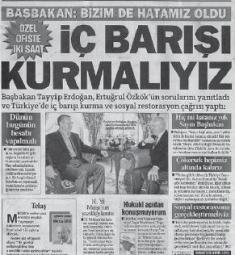

Aydın Doğan isteseydi hükümeti devirirdi.
Sekiz yıllık AKP hükümeti boyunca medya iktidar tarafından ne zaman tartışmaya açılsa bunu düşündüm: Doğan Grubu'na yönelik astronomik vergi cezaları kesildiğinde, Başbakan canını sıkan medya gruplarına öfkeyle çıkıştığında ve de tabii ki bazı yazarlar köşelerinden olduğunda.
Türkiye'nin en güçlü medya patronu söz konusu... Gücü sadece rakamsal değil. Piyasanın yarısına hâkim olmakla beraber etkinliği olan, kamuoyuna nüfuz eden, kanaatleri belirleyen bir medya grubunun patronu Aydın Doğan.
Düşünmeden edemiyorum...
Eğer AKP iktidarına zamanında gazetecilikle topyekûn savaş açılsaydı, dört bir koldan yüklenilseydi nasıl bir medya ve nasıl bir Türkiye tablosuyla karşı karşıya olurduk?
Doğan Grubu'nun kadrosunda bu psikolojik savaşın altyapısını hazırlayacak beyin takımı mevcuttu. Bu isimlerle ortak girilen taktik savaşından AKP kurtulur muydu, yoksa yara alarak mı çıkardı?
Kehanette bulunmak çok zor tabii ki. Bir de geçmişe mazi derler ama...
Ama hepimiz biliyoruz ki geçmişte sadece Doğan Grubu değil, diğer medya grupları da iktidar oyununu oynadı, zaman zaman da kazançlı çıktı. Türkiye, bir manşetle iktidarların sarsıldığı süreçlerden geçti. Bu manşetler Türkiye siyasetini tasarladı, yepyeni aktörler ilk kez bu medya gücüyle arkalarına kamuoyunun rüzgârını aldılar. Gazeteciler, seçim sonuçlarına göre "ideal" koalisyon önerileriyle siyasi iklime katkıda bulundu.
Ama bir tek AKP kontrol altına alınamadı.
Çünkü AKP her şeyden önce medyayı kontrol altına alması gerektiğini biliyordu.
Bu hükümetin diğerlerinden bir farkı daha var: Daha isyankar, daha dirençli ve kuşkusuz daha gözü kara.
AKP'yle mücadele etmenin geçmişte "Çok güçlü," denen iktidarlarla karşı karşıya gelmekten bile daha zor olduğu zaten kısa sürede anlaşıldı.
Belki ilk başta mücadele edileceği, eski yöntemlerle bu iktidarla da uzlaşılacağı düşünülmüştü. Ama kısa sürede vazgeçildi.
Bu iktidar Türkiye'de her şeyi ama her şeyi değiştirmek, bütün kurulu düzeni, müesses nizamı baştan aşağı yenilemek, kendine göre çizmek için gelmişti.
Bunu da dokunulmazlar üzerinden yapmaya kararlıydı. Yargı, ordu, iş dünyası ve de tabii ki medya...
Medyadan kasıt da elbette Doğan Grubu.
Kendine güveni sonsuz, her şeyi yapabilecek kadar cüretkar bir iktidara karşı mevcut savunma yöntemlerinin hepsi geçersizdi. Sadece medyada değil, ele geçirilmek istenen bütün kurumlarda da bu böyle olmadı mı?
2009'un Şubat ayında ilk kurşun sıkıldı: Doğan Grubu'na 826 milyon TL'lik bir vergi cezası kesildi.
Gerekçesi, Doğan TV'nin yüzde 25'inin Almanya'nın önemli medya grubu Axel Springer'e satışı sırasındaki yükümlülüklerini yerine getirmemesi olarak gösterildi.
Ve hemen aynı yılın Eylül ayında ikinci bir şok, bir uyanış daha yaşadı medya: Doğan Grubu'na bu sefer 3 milyar 755 milyon TL'lik ikinci vergi cezası kesildi.
Türkiye'nin en büyük medya grubu bir sene içinde sırtında yaklaşık beş milyar TL'lik vergi cezasıyla karşı karşıya kaldı.
Beş milyar TL nasıl bir para?
Forbes'un geleneksel olarak açıkladığı "En zengin 100" listesine göre Türkiye'nin en zengini Hüsnü Özyeğin'in o yılki serveti 2.9 milyar dolar.
Aynı listede 750 milyon dolarla 23. sırada yer alan Aydın Doğan'a hem kendi hem de Türkiye'nin en zengin insanın toplam servetinden daha fazla vergi cezası kesilmiş demek ki.
Vergi cezasından sonra hiçbir şey eskisi gibi olmadı.
Ne Aydın Doğan'ın medya dışı işlerinde, ne Doğan Grubu'nda... Ne de Türk medyasında.
Aydın Doğan'ın medyadan tasfiye edilmesini hedefleyen süreç de başlamış oldu.
Eskiden iktidarlar üzerinde neredeyse tam söz söyleyebilen medya grupları vardı. Artık Başbakan'ın gölgesinden bile korkan bir medya var. Konu sadece Aydın Doğan da değil zaten; mesajı diğer gazeteler, diğer patronlar da hemen anladı.
Başbakan bana "abi" derdi
Aydın Doğan'ın anlattığına göre Başbakan Erdoğan özel sohbetlerde ona "Abi" diye hitap edermiş; bu kadar yakın, dostane ilişkileri var geçmişte. Erdoğan'ın İstanbul'daki belediye başkanlığı döneminde de sık sık görüşüyorlar; Erdoğan hapse girdiğinde de Doğan ona geçmiş olsun mesajı yolluyor hatta.[1]
AKP'nin ilk döneminde de Hürriyet'le AKP arasında ciddi bir problem yok zaten. Hatta, AKP'nin başarılı icraatlarına, ekonomideki istikrara, Avrupa Birliği yolunda yapılan reformlara Hürriyet temelde destek veriyordu. O günlerde kamuoyundaki genel hava da böyleydi: AKP'nin gerçekten demokrasinin yolunu açtığı, kendilerini yeniledikleri, üzerlerindeki İslamcı kıyafeti çoktan çıkardıklarını ve bir merkez sağ partisine dönüştüklerini düşünenler hiç de az değildi.
Hükümet, Hürriyet'ten memnundu... Hürriyet de hükümetten. Ancak buna rağmen hiçbir iktidarın hoşlanmadığı yazar Emin Çölaşan'la ilgili bir rahatsızlık vardı.
Her zaman iktidarlara yönelik sert eleştiri, hatta kavgalarıyla tanınan Emin Çölaşan Başbakan Erdoğan hakkında haber olarak gördüğü hemen her şeyi yazıyordu. Yolsuzluk, medyanın çürümüşlüğü gibi klasik temalarına bu iktidar döneminde de devam ediyordu Çölaşan.
Ve bu dönemde de tıpkı eski liderlerin olduğu gibi Başbakan Erdoğan'ın ailesi de yazı malzemesiydi onun için. Emine Erdoğan'dan tutun da oğlunun çürük raporu alıp askerlik yapmadığına kadar...
Basın, AKP'nin ilk döneminde Başbakan Erdoğan'ı tam çözememiş, sınırlarını tam anlayamamıştı.
Zamanla, bu yazılara tepki oluştukça da Erdoğan'ın ailesine hiçbir şartta bulaşmama refleksi otomatik olarak bütün medyada gelişti...
Hürriyet gazetesinin iktidarla iyi giden ilişkilerinde çok fazla sorun yaratmasın diye Emin Çölaşan'ı dengelemeye başladığı sır değildi. Köşesini nadiren boş bırakmasıyla bilinen Çölaşan da sık sık "yıllık izne" çıkmaya başladı.
Hükümet isterse batırır
Bir gün Emin Çölaşan'ın köşesinde "Dün bazı özel işlerim uzadığı için günlük yazımı yetiştiremedim," gibi bir not okudum. Şaşırdım. Çok iyi biliyordum ki Çölaşan, bütün gününü Hürriyet'in Ankara bürosundaki odasında geçirir, sabah erkenden gazeteye girer, öğlen yemeklerini gazetede yerdi. Hayatı işi olan bir gazeteci gündelik işlerini elbette gazete yazısının önünde tutmazdı... Zaten karı-koca Çölaşanlar öyle çok fazla sosyal hayatı olan, seyahatlere, tatillere çıkan bir aile de değil.
Belli ki o gün gazetenin kendisine yaklaşımıyla ilgili bazı sıkıntıları vardı.
Ve gazetesinin de ondan belli beklentileri, ricaları, dengeyi tutturma arzuları vardı.
Zaten Emin Çölaşan da AKP döneminde Hürriyet'te yaşadıklarını Kovulduk Ey Halkım Unutma Bizi isimli kitabında ayrıntılarıyla anlatıyor.[2]
Ancak bugün bu kitaba, Çölaşan'ın yaşadıklarına baktığımda her iki tarafta da karşılıklı bir şaşkınlık ve AKP'nin kodlarını tam olarak kestirememe ortaya çıkıyor.
Hürriyet, yayın politikasıyla çok fazla çelişmesin diye Emin Çölaşan'dan bazı tavizler vermesini bekliyordu; bu anlaşılır bir durum. Dünyanın bütün gazetelerinde yazarlara yazıişleri yayın politikası ve kırmızı çizgiler doğrultusunda bu gibi müdahalelerde bulunulur; yazarlar da aşağı yukarı bunu bilir.
Emin Çölaşan ise sadece Türk basını için değil, bu bağlamda medya sistemi için de istisnai bir örnekti. Bir kere yıllarca Turgut Özal'la, Tansu Çiller'le, Melih Gökçek'le birebir mücadelede denge gözetmemesi ve kendinden başka hiç kimseyi dinlememesiyle tanındı: Denge gözettiyse ve başkalarını dinlediyse bile en azından imajını bunun aksi yönünde yaptı.
Özerk, kendi gazetesinin bile üstünde, Ertuğrul Özkök'ün olumlu anlamda kullanmadığı bir tabirle "tanrı yazar" statüsündeydi.[3]
Çölaşan'ın "tanrı yazar" mertebesine ulaşması pek çok kişiyi rahatsız ediyordu.
Başta da Aydın Doğan'ı. Medya kulisleri çok iyi biliyor ki daha AKP'yle problemler ayyuka çıkmadan Hürriyet grubunda Çölaşan sıkıntıları baş göstermeye başlamıştı.
Mesela, Ankara Büyükşehir Belediye Başkanı Melih Gökçek'ten köşesinde sürekli "İ. Melih" diye bahsetmesi, bir kere de "İ nokta Melih" yazıp tazminata mahkum olması Emin Çölaşan krizlerinin en bilinenlerindendir.
Hatta rivayet odur ki grubun yayın ilkelerinin çerçevesini çizen Doğan Etik Kurulu da Emin Çölaşan'a "İ. Melih" yazdırmamak için kurulmuştur.
Bütün şöhretini özerklik üzerine kurmuş Emin Çölaşan'ın editöryel müdahaleleri olağandışı ve belki de haddinden fazla bulduğunu düşünmemek olanaksız. AKP döneminde bu gibi müdahaleler için siyasi zemin de vardı. Herhalde bundan dolayı geçmişte olmadığı kadar çok kriz dışarıya yansıyor, piyasada "Emin Çölaşan'ı gönderecekler," dedikoduları dolanıyordu.
Aydın Doğan'ın, Emin Çölaşan'ın biletini çok uzun yıllar öncesinden kestiği, yazara küstüğü, Ertuğrul Özkök'ün de sürekli ikisi arasında tampon vaziyeti gördüğü de sıkça konuşulurdu.
Emin Çölaşan, Hürriyet'ten gönderilmeden birkaç gün önce bile bu dedikodu dolaştığında "Şaka yapıyorsunuz," demiştim. Hiçbirimiz inanmıyorduk ki... Her şey bir yana, Emin Çölaşan sıkıntı yaratabilirdi ama çok okunan bir yazardı. Bir gazete çok okunan bir yazarını, sırf iktidar istedi diye atmazdı sanıyordum...
Başka iktidarlar da gelmişti, başka dönemlerde de gazetesiyle Çölaşan karşı karşıya gelmişti, geçmişte de kara listelere alınmış ve atılması için patrona baskı yapılmıştı. Ama Çölaşan, Hürriyet'in beşinci sayfasındaki köşesini hep korumuştu.
Hepimizin saf ve iyi niyetli olduğu günlermiş...
Diyorum ya, o zamanlar AKP döneminin farkını hiçbirimiz tam olarak bilmiyorduk. Medya üzerindeki etkilerinin, müdahalelerinin de Özal'ın, Yılmaz'ın, Çiller'inkinden pek de farklı, hatta daha fazla olabileceğine ihtimal verilmiyordu.
Emin Çölaşan, Kovulduk Ey Halkım kitabının hemen başında o dönem Hürriyet'in Genel Yayın Yönetmeni olan Ertuğrul Özkök'le yaptığı bir konuşmayı anlatıyor. Bu konuşmadan bir tek Ertuğrul Özkök'ün olacakları önceden kestirdiği anlaşılıyor:
Şubat 2004. Ertuğrul [Özkök] Ankara'da. "Özel bir şeyler konuşalım" diye odama geldi. Limonlu çay söyledik ve konuşmaya başladı:
"Bak, Doğan Medya Grubu'nun bütün kuruluşları şu anda çok iyi gidiyor. Fakat hükümet isterse en sağlam kuruluşları, en sağlam bankaları bile bir günde batırır. Müfettiş gönderir, maliyeci gönderir, nasıl olsa bir eksik veya yanlış bulur. (...)"
Tam da böyle oldu.
Vur vur inlesin,
Aydın Doğan dinlesin!
Aydın Doğan, AKP'yle yakın ilişlerinin bitiminin miladı olarak 2008'in Eylül ayında Hürriyet'in manşetine taşıdığı ve ısrarla takipçisi olduğu Deniz Feneri haberlerini söylüyor: "Deniz Feneri olayından evvel de artık şey başlamıştı, bizimle ilgiyi azaltmaya. İlgi demeyeyim de, bize kızmaya başlamıştı. Soğukluk başlamıştı."[4]
Oysa hükümet 2008 yılının Nisan ayında olacakların habercisi olabilecek küçük bir uyarı mesajı yollamıştı Doğan Holding'e.
O gün yaşananlar, ileride olacakların da sadece işaret fişeğiydi. Ve ortada henüz Deniz Feneri yoktu.
Ancak Anayasa Mahkemesi AKP'ye kapatma davası açmıştı aynı yılın Mart ayında. Ve ne tesadüf ki tam bir ay sonra da Doğan Holding'de Maliye Bakanlığı vergi müfettişleri inceleme başlattı.
Bu sıradan bir inceleme ya da bir ihbar değerlendirmesi değildi.
Zira birden çok şirkette, aynı anda inceleme başladı. Üstelik sadece medya şirketleri de değildi hedef.
"Birinci dalga"da Doğan Yayın Holding, Hürriyet Gazetecilik A.Ş., Milliyet-Posta-Fanatik'i bünyesinde barındıran Doğan Gazetecilik A.Ş., Petrol Ofisi A.Ş., Doğan Dış Ticaret A.Ş., Işıl Dış Ticaret A.Ş. ve aile şirketi Adil Bey Holding A.Ş. inceleme altına alındı.
Hükümetin kapatma davası açılmasının ardından ilk verdiği tepkiydi bu. Aynı zamanda da medyaya karşı alınacak tavırlarla ilgili verilmiş açık ve net bir gözdağıydı.
30 Temmuz 2008'de Anayasa Mahkemesi'nden AKP'yi "kapatmama" kararı çıktı.
Bu aşamada tarihlere dikkat etmek gerekiyor.
2008'in Nisan ayında gerçekleşen birinci dalganın ardından kesilen vergi cezası 2009'un Şubat'ında geldi.
Yani, ceza kesildiğinde kapatma davasından yırtan bir iktidar partisi vardı. Doğan Grubu da kapatmaya sonuna kadar destek çıkmış, Ertuğrul Özkök Dolmabahçe'deki Başbakanlık özel ofisinde Erdoğan'la iki gün süren bir söyleşi yapmış ve bütün yazarlarıyla beraber gazeteler de kapatmaya net bir şekilde karşı tavır almışlardı.
Fakat kapatma kararının ardından da Eylül ayında Deniz Feneri haberleri yapılmaya başlanmıştı.
İkinci dalga ise 2009 yılının Haziran ayında gerçekleşti. Kesilen ilk cezadan yaklaşık bir, bir buçuk sene sonra. Bu inceleme kapsamında da Maliye Bakanlığı müfettişlerinin hedefinde Doğan Holding A.Ş., Kanal D-Star-CNN Türk ve bütün radyo ve TV kanallarından oluşan Doğan TV Holding A.Ş., D Yapım Reklamcılık ve Dağıtım A.Ş., D Production Hizmetleri A.Ş.'yle Alp Görsel İletişim Hizmetleri A.Ş. vardı.
İkinci dalganın ardından cezanın kesilmesi de çok uzun sürmedi ve astronomik vergi cezası 2009'un Eylül'ünde kesildi.
Hürriyet gazetesinin İnternet arşivinde arama yapıldığında Deniz Feneri haberleri en çok 2008 yılının Eylül ayında yoğunlaşıyor. Tam 439 adet sonuç çıkıyor
Eylül 2008, Deniz Feneri'nin Türkiye'nin gündemine oturduğu ay. Ve Doğan Grubu'nun üzerinin çizilmesinin de miladı.
Özetle, nedir bu Deniz Feneri e.V. Davası?
Yakın tarihin yeteri kadar yankı bulmayan, yankı bulmasına izin verilmeyen en büyük yolsuzluk davalarından biri.
Almanya'nın Frankfurt şehrinde federal polis, Deniz Feneri isimli derneğinin topladığı bağış paralarını incelemeye başlıyor. Yapılan soruşturmada paraların amacından farklı yerlere aktarıldığı ortaya çıkıyor, dava açılıyor ve kısa sürede karar açıklanıyor.
16 milyon Euro çalınmış!
"AKP'nin Kızılay'ı" denilen Deniz Feneri'nin paraları aralarında Kanal 7'nin de olduğu şirketlere aktardığı bu dava sonucunda ortaya çıktı. AKP'nin atadığı dönemin RTÜK başkanı Zahid Akman'ın da dahil olduğu, siyasete uzanan bir skandaldı.
Hürriyet yazarı Cüneyt Ülsever'in yazısı, davayı özetliyor:[5]
Almanya'da süren "Deniz Feneri Davası" sonuçlandı. Yargılanan üç kişi çeşitli cezalar aldılar. Yargıca göre toplanan bağışların içinden 16 milyon Euro çalınmış! Yani sanıklar hırsızlık yapmışlar.
Yine yargıca göre sanıklar gereğinden ağır ceza almışlar. Zira, hırsızlığı yöneten esas kişiler Türkiye'deymişler. Sanıklardan birisi hariç diğerleri bu konuda bilgi vermedikleri için yüksek ceza almışlar. Deniz Feneri-Almanya'yı Deniz Feneri-Türkiye ve Kanal 7 yöneticileri yönlendiriyormuş ve onlar esas suçlu oldukları halde Türkiye'de oldukları için yargılanamamışlar.
Mahkemeye göre ortada uluslararası bir suç şebekesi var ve şebekenin lideri Kanal 7 Yönetim Kurulu Başkanı Zekeriya Karaman! Şebeke üyeleri arasında Kanal 7 Genel Yayın Yönetmeni Mustafa Çelik ve RTÜK Başkanı Zahid Akman'ın da adları geçiyor.
Yargıç dün karara bağlanan davanın Almanya tarihinin en büyük dolandırıcılık olayı olduğunu da vurguluyor.
Adı geçen bütün kişilerin bir ortak yönü daha var.
Hepsi T.C. Başbakanı Recep Tayyip Erdoğan'ın dava arkadaşları, dostları!
Erdoğan bir belediye kanalı olan Kanal 7'yi zamanında bugünkü yönetime satan kişi. Ayrıca Deniz Feneri başbakanlığı sırasında özel haklarla donatılmış. Deniz Baykal'a göre bu haklar Mehmetçik Vakfı'na dahi verilmemiş.
Frankfurt'taki Deniz Feneri davasını orada büroları bulunan Hürriyet ve Milliyet gazeteleri muhabirleri yakından takip ettiler. İşin ilginci, karara bağlanmış, resmiyet kazanmış bir dava hakkında hükümete yakın gazeteler, başta da Sabah tek bir satır yazmadı.
Zaten Başbakan da Ankara'da katıldığı bir iftar yemeğinde halkı "Deniz Feneri davasını yazan gazeteleri almamaya," davet etti.
Açıklamanın hedefi belliydi; Doğan Grubu gazetelerinin boykot edilmesini istiyordu:[6]
"Bu ülkede medya güvenilirliğini yitirmiştir, kendini bitirmiştir. Partimin mensupları olarak yalan yanlış haberleri yapan medyaya karşı sizler de kampanyanızı yapın, bu gazeteleri evlerinize sokmayın, bu kadar açık konuşuyorum. Siz mi bize karşı yalan yanlış bu tür kampanyalar yapıyorsunuz, biz de en doğal hakkımızı kullanıyoruz, biz de size karşı bu kampanyayı başlatıyoruz, almayacağız. Hangi dilden anlarsanız o dilden konuşacağız. Biz ülkede bu hizmetleri canla başla sürdürürken bir de sizinle mi uğraşacağız ya, bizim işimiz gücümüz var."
Basın boykotu, karşılıklı restleşme derken sonunda Başbakan'ın Aydın Doğan'a yönelik uyarıları, "Benden ne istediğini açıklamak için bir hafta süre veriyorum, yoksa ben açıklayacağım," demeçleri, miting meydanlarında "Vur vur inlesin, Aydın Doğan dinlesin," sloganları atılmasına kadar vardı bu iş.
Erdoğan, Deniz Feneri haberlerinin Doğan Grubu'nun bir isteğini yerine getirmedikleri için yapıldığına inanıyordu. Ya da o sırada Hilton meselesine sarılmak, bunu kullanmak iyi bir taktikti ona göre... Aydın Doğan'ın Hilton arazisine izin verilmediği için hükümet aleyhindeki haberler yaptığını açık açık söyledi. "Bir hafta süre, açıklayacağım," dediği de buydu.
Aydın Doğan, Hilton arazisiyle ilgili iddialar için "Yok üç emsal istedi, hepsi uydurma yalan. O üç emsal lafı Şişli Belediyesi'nin kendi bölgesi için yaptığı şey, bana da yaptırdılar. Ama şimdi Hilton diyorlar. Hilton diye benim bir meselem yok. 65 dönüm yer var Hilton'un bulunduğu yerde. Orayı sonunda Aydın Doğan Parkı yapacağım herhalde. Halk da istifade edebilir," dedi.[7]
Ve böyle böyle ipler koptu...
Doğan Grubu'na yönelik cezalar Batı basınında da yer buldu. Hatta o an'a kadar AKP yanlısı bir yayın politikası izleyen New York Times'da bile ilk kez ciddi hükümet eleştirileri çıkmaya başladı. Batı basınında AKP'ye yönelik ilk soru işaretleri iki vergi cezasıyla gündeme geldi.
Amerika'da "Ilımlı İslam," Avrupa'da "Müslüman demokrat," diye sunulan bir modelin ne sanıldığı kadar ılımlı, ne de yeteri kadar demokrat olduğu ortaya çıktı bir anlamda. Avrupa Birliği İlerleme Raporu'nda Doğan Grubu'na kesilen vergi cezası basın özgürlüğüne yapılan bir tehdit olarak yer aldı.
Ama daha da vahimi, bu cezalar 22 Temmuz 2007 seçimlerinde yüzde 46.7 gibi çok yüksek bir oy alan hükümete yönelik endişeleri haklı çıkardı.
22 Temmuz 2007 seçimleri başta medyanın belli başlı yazarları olmak üzere, Türkiye'nin tam anlamıyla yarısı için bir şoktu zaten. Artık sokakta gördüğümüz her iki kişiden birisi AKP'liydi. Yüzde 46.7'ye sahip bir iktidar da istediği her şeyi yapabilirdi...
Başbakan Erdoğan o gece tarihe "balkon konuşması" diye geçen bir seçim değerlendirmesi yaptı AKP Genel Merkezi'nde. Bütün halkı kucaklayan, herkesi temsil eden bir iktidar olmayı vaat etti.
Seçimden önce olası bir CHP-MHP koalisyonu hesapları yapan, kartlarını buna göre oynayan medyanın büyük bölümü de şoktan nasibini alıyor ama kendilerini bu balkon konuşmasıyla teselli etmeye çalışıyordu.
Belki bu konuşma yeniden AKP'nin "eskiden bildiğimiz hükümetler gibi" olabileceği inancını yaratmış bile olabilirdi.
Bu konuşmanın kullanım süresi ve inandırıcılığı medyaya yönelik operasyonlarla dolmuş oldu.
Hürriyet ve Milliyet'e baskın
Tarih 5 Ağustos 2009, Çarşamba.
Rutin bir çalışma günü...
Milliyet'in yer aldığı Doğan Medya Center ve Hürriyet'in yer aldığı Hürriyet Medya Towers'da çalışanlar her zamanki gibi mesaiye başlamak için kartlarını gösteriyorlar, turnikeden geçiyorlar.
Sabah saat 9:00 civarı.
O gün iki binaya da çalışanların dışında takım elbiseli adamlar geliyor. Ellerinde çantalarıyla, girişteki bankoya yanaşıyorlar... Kendilerini tanıtıyorlar: "Rekabet Kurulu'ndan geliyoruz, bir ihbar üzerine inceleme yapacağız."
Kimliklerine bakılıyor, içeriye buyur ediliyorlar...
İstikamet reklam servisi... Her iki gazeteyi de basan müfettişler dosdoğru reklam servisinin belgelerini incelemeye başlıyorlar. Masalara yerleşiyorlar, dosyalar teker teker açılıyor, faaliyet raporları isteniyor... Bu arada yoğun bir fotokopi trafiği yaşanıyor.
İhbar dedikleri, ekonomi gazetecisi Yavuz Semerci'nin bir köşe yazısında Doğan Grubu'nun piyasadaki hâkim konumunu kötüye kullandığına ilişkin yorumu. Normalde, bu gibi pek çok köşe yazısı yayımlanıyor ama neredeyse hiçbiri ciddiye alınmıyor.
Nedense, grubun tam da vergi cezalarıyla sindirilmeye çalışıldığı dönemde bu köşe yazısı "ihbar" sayılıyor.
Her iki gazetede de 600'er sayfa belgenin fotokopisi çekiliyor. Müfettişler her iki gazetede de tam gün mesai yapıyorlar, kapıdan 19:00 civarında çıkıyorlar.
"Başka gazeteleri de inceliyor musunuz?" diye soruluyor müfettişlere.
"Hayır," diye yanıt veriyorlar, "Biz buraya ihbar üzerine geldik, bizim için bu gazeteler önemli sadece."
Doğan Medya Center'da 2008 yılının Nisan ayından beri Maliye Bakanlığı'na bağlı müfettişler zaten inceleme yapıyorlar. Patronların yer aldığı beşinci kata yerleşen müfettişler o gün bugündür medya grubunu gözlem altında tutuyorlar. Ayrıca Doğan Grubu'nun 12 ayrı şirketi de Maliye Bakanlığı'nca aylardır inceleniyor.
Rekabet Kurulu'nun ziyaret ettiği reklam servisi ise binanın giriş katında.
Böylece Doğan Medya Center binası tepeden zemine ağır bir inceleme altında kalıyor.
Reklam servisinde incelemenin başladığı tarih çok ilginç.
Doğan Grubu'nun belli sektörlerde küçülmek ve çekilmek için ilk adımı attığı güne denk geliyor.
O gün, Petrol Ofisi'nin Avustralyalı ortağı OMV'ye devri için görüşmelere başlanıyor. Hatta bu devir görüşmeleri "Acaba Doğan Grubu, bu adımları atarak hükümetle uzlaşma yoluna mı gidiyor, hükümet de karşılığında geri mi adım atacak," diye yorumlanıyor.
Bu baskın "kuşatmaya" bir örnek daha.[8]
Emin Çölaşan'ın gidişi ve
Başbakan'ın Hürriyet'ten "ricası"
22 Temmuz 2007'ye geri dönelim. Seçimin üzerinden henüz bir ay geçmemişken 14 Ağustos 2007'de "İmkansız," denilen gerçek oldu.
Gazetecilerin kendi aralarında "Hadi canım, yalandır," "Emin misin, tekrar bir kontrol etsene," diye inanmamakta ısrar ettikleri haber, televizyonda Tuncay Özkan tarafından açıklandı: Hürriyet gazetesi Emin Çölaşan'ın yazılarına son verdi.
Çölaşan'la Doğan arasındaki ilişki zaten dört-beş yıldır artık dönülmez, çözülemez bir noktadaydı.
Ancak zamanlamanın, bu operasyonun hemen seçimin ardından gerçekleşmesinin bir de "psikolojik etkisi" oldu:
Kim ne derse desin, algı Emin Çölaşan'ın hükümet istemediği için gönderildiğiydi.
Medyaya da iktidarın verdiği bir balans ayarı, bir sinyaldi.
Okur bu mesaja tepki gösterdi, Hürriyet'in tirajı kimilerine göre 40, kimilerine göre 70 bin civarında düştü.[9] Bu tirajı alabilmek için gazetelerin milyonlarca dolar promosyon parası harcadığı düşülünce Emin Çölaşan'ın gidişinin yarattığı "ticari şok" da anlaşılır.
Tam o günlerde Türkiye'nin yeni Cumhurbaşkanı seçilecekti. Zaten 22 Temmuz'da da seçimlere Abdullah Gül'ün Cumhurbaşkanı seçilmesinin önü kesildiği için gidilmişti.
Hürriyet, yayın politikası olarak Gül'ün adaylığına karşıydı. Ertuğrul Özkök sürmanşetten de sunduğu yazısında açık açık bunu beyan etti, Gül'e aday olmaması çağrısında bulundu.
O dönem medya kulislerinde bu tavrın hükümete jest olduğu bile konuşulmuştu.
Herkes Başbakan Erdoğan'la Abdullah Gül'ün arasının bozuk olduğunu, aslında Erdoğan'ın "Kardeşim Abdullah Gül," diye hitap etmesine rağmen Cumhurbaşkanlığı adaylığına çok da sıcak bakmadığı biliniyordu.
Medyaya yönelik Abdullah Gül'ün Cumhurbaşkanlığına karşı kamuoyu oluşturulması için bakanlardan Binali Yıldırım ve Başbakanlık basın sözcüsü Akif Beki'nin iletişim çalışması yaptığı bile kulislere yansıdı.
Hürriyet'in Gül'e yönelik "Aday olmayın," çağrısının yankı bulacağını, Abdullah Gül'ün belki bu sayede ısrarından vazgeçeceğini umanlar arasında Başbakan Erdoğan da vardı.
İddialara göre, Başbakan'ın bu dileğini gazete sayfasına taşıyan Hürriyet bir anlamda jest yapmıştı.
Ama Abdullah Gül, Türkiye'nin yeni Cumhurbaşkanı oldu.
Kuşkusuz bu, yeni bir kırılma noktasıydı.
O günlerde bir tek Bekir Coşkun "O benim Cumhurbaşkanım değil," diye açıkça yazdı; yazdı ama bu sefer de Başbakan Erdoğan'ın hışmına uğrayan o oldu. Hem de hiç öyle patrona şikâyet edilerek ya da baskıyla değil.
Başbakan, açık açık ve kamuoyu önünde dillendirdi tepkisini. Uğur Dündar'ın "Arena" programına çıkıp "Edep adap bilmeyenler de var. Onu diyebilen insanın önce Türkiye Cumhuriyeti vatandaşlığından çıkması lazım. Bu da benim hakkım. Çünkü bu ülkede Cumhurbaşkanı kim olursa olsun hepimizin Cumhurbaşkanıdır. Senin değilse o zaman çık buranın vatandaşlığından, kimi seçiyorsan oraya git. Oradaki Cumhurbaşkanı senin Cumhurbaşkanın olsun," dedi.
Ne garip değil mi?
Bekir Coşkun'un yabancı eşi Andree Coşkun yıllardır Fransız vatandaşlığını kabul etmeyip "Benim ülkem Türkiye," derken, Türkiye'nin önemli bir yazarına Başbakan böylesi bir çağrı yapabildi. Bunu da yaşadık, gördük...
Ama bu haber yazıişleri masasında bir "yönetici" Ertuğrul Özkök manevrasına da vesile oldu.
Hürriyet ilk gün haberi büyüterek verdi. Gece, birinci sayfa tamamen yıkılarak Başbakan'ın çağrısı sürmanşete çekildi.
Ertesi gün, aynı büyüklükte Bekir Coşkun'un "Gidemem, benim gidecek başka yerim yok," yanıtını birinci sayfada yer aldı.
Özkök, bu meseleyi büyüterek kamuoyunun gündemine taşımak niyetindeydi. Tam da istediği oldu.
"Tüm bunlar Emin Çölaşan kovulduktan hemen sonra oldu," diye anlatıyor Bekir Coşkun, "Emin'i kovan Hürriyet neden benim iktidarla kavgamda destek oluyor, yanıtı ise çok basitti. Çünkü Emin'in ayrılması ile gazete 70 bin gibi önemli bir tiraj kaybına uğramıştı, bunu toparlamaya çalışıyordu yönetim. İyi bir fırsattı bu. Tüm Türkiye Hürriyet'i konuşuyor, bayilerde erkenden gazete tükeniyor, herkes bir gün sonra ne olacağını merakla bekliyordu. Yönetimin bundan iyi bir tiraj artışı beklediğini bal gibi biliyordum."[10]
Öyle de oldu zaten. Bekir Coşkun'un arkasında duran Hürriyet giden tirajın bir kısmını ama en önemlisi kaybetmek üzere olduğu itibarını, "muhalif yazarına sahip çıkarak" yeniden kazandı.
Bu Başbakan için çok önemli değildi gerçi. Çünkü Coşkun'un üzeri bir kere çizilmiş, kara listeye konmuştu zaten.
Ve Erdoğan "futbolcu yöntemleri ile imam kültürünü birleştirmiş bir garip insandı" Bekir Coşkun'a göre: "Son derece kindar, acımasız, devlet adamlığından nasibini almamış birisiydi. (...) Tayyip Erdoğan'ın bir yaban ilkesi vardı: Yaralayınca öldüreceksin. Eğer yaralı bırakırsan o yaralı bir gün intikam için geri dönebilir."[11]
Aydın Doğan'ın bir türlü anlamak istemediği de bu oldu.
Bekir Coşkun olayı
Eğer Bekir Coşkun, Emin Çölaşan'ın yazılarına son verildiği gün Hürriyet'ten istifa etseydi...
"Emin sadece arkadaşım değil ayrıca yoldaşım, birimiz hepimiz için," diyerek rest çekseydi ve gitseydi...
Sadece günün kahramanı olacaktı.
Bir gün alkışlanacak, ertesi gün unutulacaktı.
O kalmayı, kalesini korumayı ve mücadelesini o kaleden sürdürmeyi tercih etti... İyi de etti.
Bugünler pire için deve yakmanın değil, aksine mücadele edebildiğin kadar mücadele etmenin, giderek daralan sınırları zorlamanın, ne kadar kıstırılırsan kıstır sana bırakılan alanın içinde mücadele etmenin günleri çünkü. Hepimiz için bu geçerli; yazabildiğimiz her gün kârdır.
Ama tam da bu yüzden yazarların kritik zamanlarda aldıkları kararlar onlara büyük bir yük olarak geri dönüyor. Nitelikli okur sırtlarına belki de pek çoğunun aslında taşımaya gönüllü olmadığı bir misyon yüklüyor. Bu yazarın adımlarını bireysel atmasını engelliyor. Algı, beklenti ve okurun gücü devreye giriyor.
Bekir Coşkun da son birkaç yıl içinde tam da böyle bir misyonun yazarı oldu.
Muhaliflerin, sesi kıstırılmışların, baskı altındakilerin sesine dönüştü.
"Göbeğini kaşıyan adam"la savaşmak isteyenlerin, birinci Cumhuriyet'çilerin, isyanın kalesiydi Onuncu Köy. Sorumluluğu da arttıkça arttı.
Tek kişilik bir ordu gibi gördü okur onu, ona inandı, güvendi ve yatırım yaptı...
Bekir Coşkun'un Hürriyet'te kalması bir anlamda da nitelikli okurun gücüne bir taahhüttü:
Bu kaleyi bırakmıyorum, bir yere gitmeye niyetim yok, buradayım ve sonuna kadar savaşacağım...
Kaldı ve kazandı.
Ama sonunda Bekir Coşkun da gitti...
Aydın Doğan'la Ankara'da görüştüğünde "Size bir tasfiye listesi verildi mi?" diye sormuş. Medyada Doğan Grubu'ndan gitmesi istenen yazarlardan oluşan bir listenin varlığından epeydir söz ediliyordu.
Aydın Doğan, onu doğrulamış. İkinci sırada Bekir Coşkun, üçüncü sırada da Oktay Ekşi varmış. Birinci sırada belli ki çoktan Hürriyet'ten giden Emin Çölaşan vardı.
"Anladım ki çakallar bir sarı inek daha istiyorlar," diye anlatıyor o günleri Bekir Coşkun, "O zaman istifa etmeyi düşünmeye başladım. Ve oturup 'Birini asacaklar' başlıklı bir yazı yazdım, mutsuz, keyifsiz, kara düşünceler içinde... Hürriyet'te sondan ikinci yazımdı o."[12]
Burada bir konunun özellikle altını çizmek gerekiyor: Bekir Coşkun, Hürriyet'ten kovulmadı. Zaten Emin Çölaşan'ın yarattığı hasarın ardından Hürriyet'in Bekir Coşkun'u kovmaya gücü yoktu. Böylesi bir operasyonu ne açıklayabilirler, ne de taşıyabilirlerdi.
Ayrıca Coşkun'a Emin Çölaşan'ın aksine ayrı bir ilgi de gösterildi: Gitmesin diye hem Doğan Ailesi, hem de Ertuğrul Özkök sık sık onu aradı, ikna etmek için uğraştı. Ama başarılı olamadılar.
Hürriyet yazıişleri müdürü ve yazarı Tufan Türenç sürecin tanığı:[13]
Son günlerde internette Bekir Coşkun'un bir yazısı dolaşıyor.
Bu yazının Bekir Coşkun'un son yazısı olduğu ve Hürriyet tarafından yayınlanmadığı iddia ediliyor.
Sonra deniyor ki: "Maalesef Bekir Coşkun kendisine yapılan baskılar nedeniyle Hürriyet'ten istifa etmek zorunda kaldı."
Bu doğru değil.
(...)
Arkadaşlar arşive girip geriye doğru bir tarama yaptılar.
"Hürriyet'in yayımlamadığı" denilen yazı 5 Ağustos 2005 tarihinde 3'üncü sayfadaki köşede çıkmıştı.
Yani bundan tam dört yıl önce...
O zamanlar Bekir'in Hürriyet'ten ayrılması gibi bir durum da yoktu.
Hürriyet'e neden böyle bir iftira atılmaya çalışıyor anlayamadım.
Birileri Bekir Coşkun'un Hürriyet'ten ayrılışını başka bir havaya sokmak için büyük çaba harcıyor.
Oysa Bekir'in ayrılmasını hiç kimse istemedi.
Tersine, gitmemesi için başta yönetim olmak üzere hepimiz büyük çaba harcadık.
İşin aslı şu:
Bekir'e Habertürk Gazetesi'nden çok iyi bir teklif yapıldı.
O da düşündü taşındı ve profesyonelce bir karara vardı.
Teklifi kabul etti ve uygar bir insan gibi Hürriyet'le el sıkışıp ayrıldı.
Olay budur.
Bekir Coşkun, Fatih Altaylı'nın arzusuyla Habertürk gazetesinin üçüncü sayfasına transfer oldu. Onuncu Köy, kendisine yeni bir durak buldu böylece. Bekir Coşkun'u transfer etmek, daha gazetenin kuruluş aşamasında Fatih Altaylı'nın kafasındaydı zaten...
Hatta Emin Çölaşan'ı da almak istiyordu Habertürk'e. Eski Hürriyet'çi olduğu için bu yazarların mevcut durumdan huzursuz olduğunu biliyor, Habertürk'te de onların katkısıyla eskinin güçlü kuvvetli Hürriyet'ini yaratmak istiyordu.
Emin Çölaşan'la da anlaştı; hatta banka hesabına birkaç maaş bile yatırıldı. Ancak gazetenin çıkış aşamasında çok sudan bir sebepten bu iş olmadı: Emin Çölaşan'ın bir İnternet sitesine verdiği bir söyleşiye bozulmuştu güya patronajı!
Tabii ki hiç inandırıcı değildi bu gerekçe. Belli ki birileri "Emin'i almayın," diye mesaj yollamış... Bu yüzden de gazete daha kuruluş aşamasında ilk star transferini gerçekleştirememişti.
Emin Çölaşan'ı daha gazetede yazmaya başlamadan taşıyamayan Habertürk, Bekir Coşkun'a ne kadar katlanabilirdi ki?
Nitekim, katlanamadı da.
Her şey bir yana, Bekir Coşkun profesyonel olarak yanlış bir tercih yapmıştı öncelikle. Habertürk'te yazıları kayboldu, bir türlü Hürriyet'teki eski havayı yakalayamadı.
Hürriyet'te onun boşalttığı köşeye gelen Yılmaz Özdil ise neredeyse bir rock yıldızına dönüştü; sert, net, mizahi, kısa ve öz yazılarıyla gazetenin en çok okunan yazarı oluverdi.
Oysa Habertürk'te sanki büyük bir yazı ustası olan Bekir Coşkun'a birileri elini korkak alıştırmasını tembihliyordu. En azından okur olarak algı bu yöndeydi; çünkü Hürriyet'teki o hava yoktu.
Ona referandum döneminde, tam da seçimden birkaç gün önce "izne çıkması" önerildi. Kritik bir dönemeç öncesi, gazetenin kamuoyuna en fazla nüfuz eden yazarından tuhaf bir istekti.
Bekir Coşkun'un sadece referandum sürecinde değil, hiç yazması istenmiyordu. Emin Çölaşan'ın burada işe başlamasını kim istemediyse, aynı güç Bekir Coşkun'un da yazılarına son verilmesine karar vermişti.
Bu görünmez güç gazetenin Genel Yayın Yönetmeni'nin bile üstündeydi. Belki patronajın bile!
Onu gazeteye getiren Fatih Altaylı'nın bile engelleyemediği bir operasyonla Habertürk'ten gönderildi Bekir Coşkun. Gönderildiğini yolda, cep telefonundan haber aldı: Arayan kişi Coşkun'un kovulduğunu İnternet'te okumuştu ve Coşkun ilk kez ondan duyuyordu!
Bekir Coşkun'un gidişiyle beraber Habertürk'ün bir yazar öğütme makinesi olduğu ortaya çıktı. Deniz Feneri'ni en iyi bilen gazeteci Ali Gülen'i transfer etmişlerdi mesela; onunla da bir süre sonra "yollar ayrıldı." Washington temsilcisi olarak atanan Tülin Daloğlu da Erdoğan'ın İsrail çıkışını eleştirdiği için gönderildi.[14]
Neyse...
AKP kapanacaktı...
Ve Hürriyet devreye girdi
AKP ve Doğan Grubu uzlaşır mıydı? İlk günlerdeki yakınlık neden sonradan bozuldu, bunun altında neler yatıyordu.
Bilinen nedenler ortada...
Deniz Feneri haberi... Emin Çölaşan, Bekir Coşkun, Yılmaz Özdil gibi yazarlar... Eski bir "İslamcı" olan ve kendini deyimiyle "dönen", artık o hayat tarzını benimsemeyen ve hatta hükümete muhalefet eden Ahmet Hakan'ın yıldızının parlatılması... Bunları zaten herkes biliyor; ama tabii ki tek bir faktör yok.
Farklı farklı şikâyetler toplamının hükümet nezdinde yarattığı bir sıkıntı söz konusu...
Tabii "411 el kaosa kalktı" manşetini de unutmamak gerek.
Başbakan Erdoğan'ın hiçbir zaman affetmediği, asla unutmadığı, yandaş medyanın da Hürriyet'e sık sık vurmak için hatırlattığı o manşet.
10 Şubat 2008 günü Hürriyet'in birinci sayfasında yer alan "Başörtüsüne üniversitelerde serbestlik getirecek olan anayasa değişikliğinin TBMM'de kabul edilmesine" ilişkin haberin manşeti.
Bu manşet, sorunun çözülmediğini aksine daha da karmaşıklaştığını belirtiyordu. Sonunda yasayı Anayasa Mahkemesi reddetti. Ve toplumsal mutabakat sağlanmadan alelacele Meclis'ten geçirilen bu yasa iptal oldu. Başörtülü öğrencilerin hayali suya düştü.
Doğan Grubu'nun tamamen üzerinin çizilmesinin, hatta Ertuğrul Özkök'ün görevden alınmasının nedeni olarak da bu manşet gösteriliyor.
Sahiden öyle mi?
Gelin, asıl bir başka manşete bakalım.
Açıkçası, AKP'yle Doğan Grubu arasındaki dramatik dönüşümün en simgesel manşeti kapatma davasından dört gün önce atıldı.
Ertuğrul Özkök, Dolmabahçe'de Başbakan Erdoğan'la buluştu ve bir söyleşi yaptı:

Kapatma davası hakkında ne düşünüyor?
"Sonucun ne olacağını bilmiyorum.
İnşallah memleketimiz için hayırlı bir sonuç çıkar."
Sohbet buraya geldiğinde, sokakta en çok konuşulan konulardan birine geliyorum.
AKP kapatılmadığı takdirde Erdoğan'ın tutumu ne olacak?
Yaygın bir kanaate göre, "sertleşecek", hatta "diktatörleşecek" ve kendine muhalif diye gördüğü herkesi yok etmeye çalışacak.
"Sonucun ne olacağını bilmiyorum. İnşallah memleketimiz için hayırlı bir sonuç çıkar. Size şunu söyleyebilirim. Benim milletime karşı hiçbir zaman kinle, nefretle davranmam mümkün değildir."[15]
Hürriyet bu söyleşiyle beraber AKP'nin kapatılmasına karşı açık tavır aldı.
İşin ilginci, o sıralarda kulislerde "AKP kesin kapatılacak," bilgisi dolaşıyordu. Son dakikada, aniden iki üye karar değiştirdi.
Bu karar değişikliğine de Özkök'ün söyleşisinin neden olduğu sıkça konuşuldu.
Doğan Grubu ve Özkök'ün yaptığı doğru muydu, derseniz doğrudur. Hiçbir medya kuruluşu parti kapatmayı savunmaz, savunamaz ve savunmamalı da.
Demokrasiyle varolan bir medya anti demokratik müdahalelerin destekçisi olamaz.
Ama bu desteğin ardından gelen vergi cezaları, sürekli aşağılanma, hedef gösterilme sürecinde de insan düşünmeden edemiyor.
Ne "411 el kaosa kalktı", ne de Deniz Feneri haberleri.
Ve bu söyleşi Özkök'ün kendi koltuğundan olmasının yanı sıra başta Hürriyet olmak üzere Doğan Grubu'ndan başka kellelerin de gitmesine ve Doğan Grubu'nu bitirme operasyonunun hız kazanmasına neden oldu.
Yandaş gazeteci, tek hedefin Hürriyet'tir
Aydın Doğan iyi, çevresi kötü...
Adamları yüzünden Aydın Doğan bu hale düştü...
Aydın Doğan'a sesleniyorum: Onları at, beni al...
Geçmişte Aydın Doğan da başkalarına kötülük yaptı, şimdi cezasını çeksin...
Bu gibi yorumlar, Doğan Grubu'na kesilen cezanın ardından sık sık dillendirilir oldu. Yandaş medya, hükümetin attığı adımı sahiplendi ve hemen Doğan Grubu'nu bitirme planına ortak oldu.
Niyetleri belliydi... Hürriyet, Milliyet gibi gazetelerde muhalefet yapan yazarları ayıklamak, bu gazeteleri dönüştürmek... Hatta mümkünse kendileri ele geçirmek.
AKP, kendi medyasını yaratmaya çalışıp durdu ama bir türlü başarılı olamadı. Zaman, Bugün, Star, Vakit (sonradan adını Yeni Akit'e değiştirdiler), Yeni Şafak gibi iktidar bültenlerinin toplam satışı bir Hürriyet etmiyor.
Dahası, kamuoyu gözünde etkinlikleri, itibarları da yok.
El konulan, dönüştürülen Sabah da bekleneni vermedi.
Yandaş yazarların da gözü Hürriyet'teydi.
Fehmi Koru gibi yazarlar Aydın Doğan'a çağrıda bulunmaktan hiç çekinmedi. "Aydın Doğan iyi, çevresi kötü," gibi sözler de hep onun yaydığı mesajlardı.
Neredeyse bu vergi cezasından sonra binada oda, gazetede sayfa seçmeye hazırlanıyordu.
Tabii bu arada birilerinin gerçek yüzü de göründü.
Kendisine yönelik eleştirilerde, yazan gazeteciyi değil de köşesinden sürekli patronu hedef alan Mehmet Barlas da koroya katıldı. Yazarları patronlarına şikâyet eden, patronlarla şahsi ilişkileri çok önemseyen ve yıllarca Aydın Doğan'la çalışan Barlas da "Yöneticiler sorumlu" diyordu.
Aydın Doğan'ın ve daha genel olarak Doğan Grubu gazetelerinin kuşkusuz hataları, hatta belki affedilemez günahları da olmuştur geçmişte.
Ama bu vergi cezası hesaplaşmanın, eski defterleri açmanın günü değildi. Besbelli burada başka bir oyun dönüyordu, bu oyuna da gazeteciler ortak olmaktan çekinmiyordu.
Aydın Doğan batsın, gazeteleri ve televizyonları elinden alınsın ve herhangi bir müteahhite verilsin... Sanki o zaman Türk Basını daha ileriye gidecek, düzelecek, çıta yukarıya mı çıkacak?..
Bilakis, yepyeni bir patron medyayı öğrenme süreci içinde pek çok gazeteciyi kıyıp atacak, öğütecek ve bu arada gazetecilik biraz daha darbe alacak...
Geçmişte de böyle olmadı mı?
Mesele Aydın Doğan'a indirgenecek kadar basit ve kişisel değil.
Doğan Grubu artık "bizden biri" değildi iktidar için; dahası kamuoyunu etkilemek için Doğan Grubu gazetelerine de ihtiyacı vardı bu iktidarın. Başbakan belli ki Pravda gibi sadece iktidarın hoşuna giden, iktidarı öven haberler veren gazeteler olsun istiyordu.
Bu vergi cezası bu yüzden kesildi.
Bu operasyona destek veren, Doğan Grubu'na verilen vergi cezasına sevinen gazetecileri acaba unutacak mıyız?
Medya gruplarına çeşitli baskılar yapıldığında hiçbir zaman "Rakibimiz, oh olsun onlara," diye düşünmediğim için vicdanım rahat...
Ciner'in Sabah'ına el konmasında da, Doğan Grubu'na aşırı yüksek vergi cezası kesilmesinde de hep bu ülkede gazetecilik yapmanın giderek zorlaşacağından endişe ettim.
Hâlâ aynı şekilde endişeliyim.
Benzer baskılardan, benzer cezalardan Çukurova grubu da nasibini almadı mı? Hadi ben oranın bir çalışanıyım, tarafım; bu konuyu o yüzden geçiyorum.
Bu gibi durumlarda sektör içi tavırların da "Bugün sana, yarın bana," olması gerektiğine inanırım. Bugün Türk medyasının ödemek zorunda olduğu bedeller hep gazeteciliğe çıkartılan faturalar.
Mesleğimiz içindeki bazı arkadaşlar "Türkiye demokratikleşiyor," diyor... Bu mudur demokrasi ve özgürlükten anladığımız; basının susturulması, herkesin tek üniforma tipine indirgenmesi, aynı dili konuşması mı?
Bu ayıpları sineye çekecek, bu dönem bitince hiçbir şey olmamış gibi gazetecilik yapmaya devam edecekler mi acaba?
Gerçekten merak ediyorum.
AKP'nin Hürriyet'e çıkardığı fatura
Vergi cezası süreci ve genel olarak AKP iktidarı Doğan Grubu'nda nelere mâl oldu?
Öncelikle Aydın Doğan, Hilton arazisini yeniden değerlendirmekten vazgeçti.
Borçlarının bir kısmını ödemek için Petrol Ofisi'ni satıp büyük hevesle girilen petrol işinden vazgeçildi. Halbuki rafineri kurmak istiyordu, bu işte ilerlemeyi planlıyordu.
Aralarında Hürriyet ve Kanal D gibi grubun lokomotiflerinin de yer aldığı medya kuruluşlarının satışı için düğmeye basıldı. Teklifler alındı, görüşmeler başladı. Bu satışın hiçbir zaman gerçekleşmeyeceği, hükümeti 12 Haziran 2011 seçimlerine kadar oyalamak için bu lafların çıkartıldığı da konuşuluyor. Ama AKP'nin iktidarda kaldığı sürece Doğan Grubu'na yaşam şansı tanımayacağı da çok belli.
Ve tabii kadro değişiklikleri...
Doğan Grubu hem holding, hem de medya yönetimi bazında yeniden yapılandı. Aydın Doğan "onursal başkanlığa" yükseltildi, kızları medya grubundan çekildi, Hürriyet ve Milliyet'e profesyonel CEO'lar atandı. Bazı profesyonel yöneticilerle yollar ayrıldı.
Künyeler, gazetelerin yazar kadroları da bu değişimden nasibini aldı.
20 yıllık Ertuğrul Özkök dönemi bitti. Yerine Ankara temsilcisi Enis Berberoğlu getirildi.[16]
Emin Çölaşan, Bekir Coşkun'dan sonra Hürriyet'ten Oktay Ekşi de gitti. İnternet sitelerine birkaç kere Hürriyet yazarlarının yazılarının sansürlendiği iddiaları sızdı; bir seferinde Yılmaz Özdil ve Mehmet Y. Yılmaz'ın köşeleri yazı günlerinde boş kaldı, bir kere Cüneyt Ülsever ve Yalçın Doğan'ın yazıları basılmadı.[17]
Hürriyet'te yazar operasyonu bununla da sınırlı kalmadı: Gazetenin yazıişleri müdürü ve kıdemli yazarı Tufan Türenç'in köşesine son verildi. Yazılarıyla hükümetin, Cemaat'in tepkisini çeken ve belli bir kesimce persona non grata ilan edilen Özdemir İnce'ye sadece haftada bir yazması söylendi. Tıpkı Cüneyt Ülsever gibi, onun da köşesi sessiz sedasız kaldırıldı ve gazeteyle ilişiği kesildi.
Yazdığı ısrarlı yazılarla Başbakan'ın ticari işlerini devretmesini sağlayan Sedat Ergin, Milliyet'in yayın yönetmenliğinden alındı. Ergin, eskiden olduğu gibi Hürriyet'te yazıyor.
Vatan gazetesinin Genel Yayın Yönetmeni Tayfun Devecioğlu, Milliyet'e atandı. Muhalif yazar Mehmet Tezkan da Milliyet'te yazmaya başladı.
Ancak Vatan gazetesinin içi boşaltıldı. Önce Necati Doğru'nun İstanbul Büyükşehir Belediye Başkanı Kadir Topbaş'ı eleştiren yazısı sansürlendi, usta yazar da istifa etti.[18] Ardından Mine G. Kırıkkanat'ın yazılarına son verildi: Gerekçe, daha önce sekiz kere yazısı sansürlenen Kırıkkanat'ın dayanamayıp dokuzuncuyu Facebook sayfasında yayınlamasıymış!
Başbakan'ın basın sözcülüğünden ayrıldıktan sonra kendisine köşe arayan Akif Beki, Radikal'de yazmaya başladı. Radikal, Zaman gazetesi kökenli Eyüp Can Sağlık'a teslim edildi ve Haluk Şahin, Türker Alkan gibi muhalif yazarlarından arındırıldı. Bir ara Eyüp Can'a Hürriyet'in Genel Yayın Yönetmenliği sözü verildiği, hatta Aydın Doğan'ın da son anda bu karardan döndüğü bile konuşuldu. Nitekim, Özkök'ün gidişinden bir süre önce o sıralar Referans'ı çıkartan Eyüp Can, Hürriyet'e "Haber koordinatörü" olarak atanmıştı. Berberoğlu'nun gazetenin başına gelmesinden sonra da istifa etti.
Bir değişim de televizyonda yaşandı.
Her Pazar günü Star TV'de siyasetin nabzını tutan ve mutlaka en çok izlenen ilk 10 program arasına giren Ruhat Mengi'nin "Her Açıdan"ı aniden ekrana veda etti.
CNN Türk'te Pazar günleri muhalif bir haber programı yapan Mehmet Tezkan'ın ekran macerası da "kısa" kesildi.
Ve son olarak da bu dönemin en etkili muhalefet sitesi odatv.com'un kurucusu ve Hürriyet yazarı Soner Yalçın'ın CNN Türk'te yaptığı haftalık belgesel serisi "Oradaydım" yayından kaldırıldı. Ergenekon operasyonunda tutuklandıktan sonra Hürriyet'teki yazılarına devam eden Yalçın'ın haftalık köşesi birkaç haftanın ardından sessiz sedasız kaldırıldı.
Aydın Doğan'ın anlamak istemediği
Artık iyice anlaşıldı ki Başbakan Erdoğan siyasette propaganda metodu olarak halkın karşısına kimi kişi ya da kurumları direkt hedef gösteriyor. Referandumu "Yargıyı dedeler ele geçiriyor," ya da "soy-sop" meselesi üzerine kurdu, Anadolu'daki bastırılmış Alevifobi'yi hortlatarak kendine oy topladı.
Benzer şekilde, Aydın Doğan da iktidarın şamar oğlanı oldu. Üç konuşmadan birinde mutlaka medyaya çatıldı. "Sen bu köşe yazarlarının parasını vermiyorsun, bunları at," diye açık açık şikâyetler dile getirildi. "Gazeteciler kim oluyor ki, en fazla bu ülkenin yüzde 15'isiniz," diye küçümsendi. Aydın Doğan miting meydanlarından örtülü tehdit edildi, köşe yazarlarına "Bu ülkeden çek git," dendi.
Ve Erdoğan bütün medyayı sindirmeyi başardı.
Aydın Doğan istese AKP'yi devirirdi diyorum ya...
Artık mücadele etse de faydasız; iş işten geçti. Kaç kişi kaldı şunun şurasında: Ele geçirilmeyen, dönüştürülmeyen; direğine yeni bir bayrak asılmayan kaç kale daha var ki?
Kalanların da mücadele gücü var mı, yeterli sayıda mı, emin değilim. Referandumda "Hayır" oylarının yüzde 42 çıkması, ne olursa olsun yüzde 58'in yenilmeyeceğine dair bir umutsuzluk da oluşturdu hepimizde.
Aydın Doğan, bu tavizleri vererek uzlaşacağını zannediyor ama yanılıyor: Nitekim medya grubunun yeniden tasarlanmasının ardından yaşanan gelişmeler de bunu doğruluyor.
Doğan Grubu bir sonraki dönem de –hemen herkes gibi– Erdoğan'ın iktidarda kalacağını düşünüyor ve buna göre hesap yapıyor.
Bu süreci de en az hasarla atlatıp elinde ne var ne yoksa çıkarmak istiyor. Ya her şeyi satacak, ya iyice küçülecek, ya da durumu idare edip, zamana yayıp aynen malvarlığını koruyacak.
Diğer yandan, hükümetle uzlaştığı ve gerekli tavizleri verdiği için medyasını satmaya gerek kalmadığını bile düşündüğü konuşuluyor. Aydın Doğan'ın bizzat "Gazetelerimde başımı ağrıtacak hiçbir şey olmasın," dediği, medyada görev yapan dört kızından bazılarıyla da hükümetle savaşma konusunda çatıştığı rivayetler arasında.
Aydın Doğan medyada kalsa da, medyadan gitse de bilmeli ki bu "hesaplaşma" öyle kolay bitmeyecek.
Bitmediğini yakın tarihimizden iyi biliyoruz.